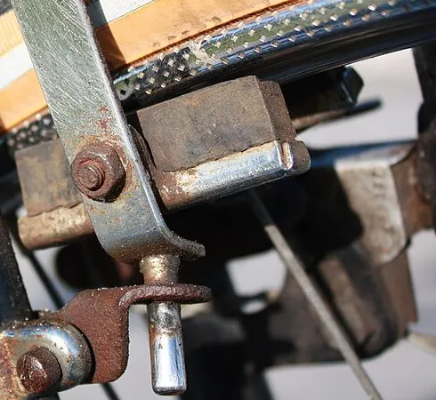
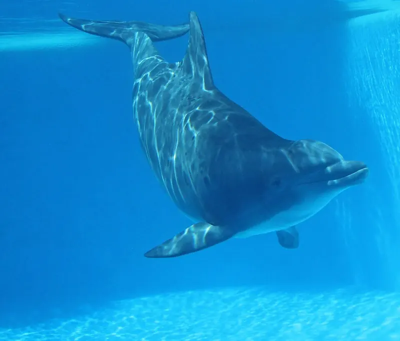

Cambridge Primary Checkpoint · Science 0097 · Stage 6 · Physics
Force Diagrams and Forces on Moving Objects
Draw force diagrams that show the name, size and direction of each force, and use balanced and unbalanced forces to predict whether an object stays still, speeds up, slows down or changes direction.
British & IGCSE › Checkpoint 6 › Checkpoint 6 Science — Complete Course
- Draw and use force diagrams that show the name, the size (in newtons) and the direction of each force acting on an object (6Pf.03).
- Describe what different forces do to an object that is at rest (still) and to an object that is already moving: start it, stop it, speed it up, slow it down, change its direction or change its shape (6Pf.04).
1. What is a force?
A force is a push or a pull. You cannot see a force, but you can see what it does: a force can make a still object start to move, make a moving object go faster, slower or change direction, and it can change an object's shape (squash, stretch, bend or twist it).
Forces are measured in newtons (N), named after the scientist Isaac Newton. We measure a force with a forcemeter (also called a newton meter): a spring inside stretches more when the pull is bigger, and a pointer shows the force on a scale in N.
| Word / phrase | Meaning / use |
|---|---|
| force | قوة — a push or a pull, measured in newtons (N) |
| newton (N) | نيوتن — the unit of force |
| forcemeter / newton meter | ميزان زنبركي — the instrument used to measure a force |
| weight | الوزن — the pull of gravity on an object, acts downwards |
| support force | قوة رد الفعل / قوة الدعم — the upward push from a surface (floor, table, chair) |
| friction | الاحتكاك — a force between two surfaces that rub; it acts against the movement |
| air resistance | مقاومة الهواء — friction from the air on a moving object |
| water resistance | مقاومة الماء — friction from water on an object moving through it |
| upthrust | قوة الدفع لأعلى — the upward push of water (or air) on an object in it |
| balanced forces | قوى متزنة — equal in size and opposite in direction; they cancel out |
| unbalanced forces | قوى غير متزنة — one force is bigger than the force opposite it |
| overall (resultant) force | القوة المحصلة — what is left when you combine all the forces |
| at rest | ساكن — not moving |
| steady speed | سرعة ثابتة — the same speed all the time |
2. The forces you need to know
| Force | Direction | When it acts | Example |
|---|---|---|---|
| Weight (gravity) | Always straight down, towards the centre of the Earth | On every object, all the time | An apple falls from a tree |
| Support force | Up, away from the surface | When an object rests on or presses on a surface | A table holds up a book |
| Friction | Opposite to the movement (or the attempted movement) | When two surfaces slide or try to slide over each other | Brakes slow down a bicycle |
| Air resistance | Opposite to the movement | When an object moves through air | A parachute slows a skydiver |
| Water resistance | Opposite to the movement | When an object moves through water | A swimmer feels the water pushing back |
| Upthrust | Up | When an object is in water (or another liquid or gas) | A boat floats |
| Push or pull (applied force) | The way you push or pull | When something or someone pushes or pulls | You push a shopping trolley |
| Driving force / thrust | Forwards | From an engine, a motor, legs or pedals | A car engine moves the car forwards |

Notice the pattern: friction, air resistance and water resistance always act against the movement. If an object moves to the right, these forces point to the left. Air resistance and water resistance get bigger when the object moves faster, and they are smaller for streamlined shapes (smooth, pointed shapes like a fish or a racing car).

3. Drawing force diagrams
A force diagram shows every force on an object as an arrow. One arrow gives you three pieces of information at once.
How to draw a force diagram — step by step
- Draw the object simply — a box or a circle is enough.
- Think of every force acting on it: Is gravity pulling it down? Is a surface pushing it up? Is it moving (friction or air/water resistance)? Is something pushing or pulling it? Is it in water (upthrust)?
- Draw each force as a straight arrow drawn with a ruler. The arrow starts on the object and points the way the force acts.
- Make the length match the size: a force twice as big gets an arrow twice as long. Forces that are equal get arrows of the same length.
- Label every arrow with its name and size, for example "weight 6 N".
4. Balanced and unbalanced forces
Most objects have more than one force acting on them. To find what will happen, work out the overall force (also called the resultant force).
- Forces in the same direction: add them. Two people pushing a car forwards with 200 N and 150 N give 350 N forwards.
- Forces in opposite directions: subtract the smaller from the bigger. The overall force acts in the direction of the bigger force.
- If the opposite forces are equal, the overall force is 0 N and the forces are balanced.
- If the overall force is not zero, the forces are unbalanced.
5. What forces do to objects at rest and in motion
| The object is… | Forces are BALANCED | Forces are UNBALANCED |
|---|---|---|
| At rest (still) | It stays still. | It starts to move in the direction of the overall force. |
| Moving | It keeps moving at the same speed in the same direction (steady speed). It does NOT slow down or stop. | Overall force forwards (with the motion): it speeds up.; Overall force backwards (against the motion): it slows down and may stop.; Overall force sideways: it changes direction. |
Forces can also change the shape of an object: squeezing a sponge, stretching an elastic band, bending a ruler or kicking a football (the ball squashes for a moment).
A moving object does not need an overall force to keep moving. If the forces on a moving car are balanced, the car keeps going at a steady speed. On Earth things usually slow down because friction and air resistance are acting — once the engine force matches them, the speed stays the same.
Story of a skydive: (1) She jumps — weight is much bigger than air resistance, so she speeds up. (2) As she gets faster, air resistance grows until it equals her weight — balanced, so steady speed. (3) She opens the parachute — air resistance suddenly becomes much bigger than weight, so she slows down. (4) As she slows, air resistance falls until it equals weight again — balanced, so a new, slower steady speed. (5) She lands — the ground gives a big upward force that stops her.
- القوة يا زقّ (push) يا شدّ (pull)، وبنقيسها بالنيوتن (N) بجهاز اسمه forcemeter.
- في رسم القوى: كل قوة سهم — اتجاه السهم = اتجاه القوة، وطول السهم = مقدار القوة، ولازم تكتب اسم القوة ومقدارها جنبه.
- قوى متزنة (balanced): الحاجة الواقفة تفضل واقفة، والحاجة اللي ماشية تفضل ماشية بنفس السرعة — مش بتقف!
- قوى غير متزنة (unbalanced): الجسم يتحرك أو يسرّع أو يبطّأ أو يغيّر اتجاهه — في اتجاه القوة الأكبر.
- الاحتكاك ومقاومة الهواء ومقاومة الماء دايمًا عكس اتجاه الحركة.
6. Worked examples
Worked example 1 — An apple hangs still from a branch. Its weight is 1.5 N. Draw a force diagram for the apple. [2]
- The apple is still, so the forces must be balanced.
- Gravity pulls down: arrow pointing down, labelled weight 1.5 N.
- The stalk pulls up: arrow pointing up, labelled pull of the stalk 1.5 N, the same length as the weight arrow.
Answer: two arrows starting on the apple, equal length, opposite directions, both labelled 1.5 N. Common mistake: drawing the up arrow shorter — then the apple would fall.
Worked example 2 — Two children push a heavy box to the right with forces of 40 N and 35 N. Friction on the box is 60 N. The box starts still. (a) Work out the overall force on the box. Show your working. [2] (b) Describe what happens to the box. [1]
- Pushes in the same direction add: 40 + 35 = 75 N to the right.
- Friction acts the opposite way (left): 75 − 60 = 15 N to the right.
- (b) The forces are unbalanced, so the box starts to move to the right.
Common mistake: adding all three numbers (40 + 35 + 60 = 135 N). Friction is in the opposite direction, so it must be subtracted. Always give the direction with the size.
Worked example 3 — Look at the car diagram in section 4 (driving force 900 N, friction + air resistance 600 N). (a) Describe the motion of the car. [1] (b) The driver lets the driving force fall to 600 N. Describe the motion now. [1] (c) The driver then brakes, and the backward force becomes 1500 N while the driving force is 0 N. What happens? [1]
| Part | Forces | Answer |
|---|---|---|
| (a) | 900 N forward, 600 N back → 300 N forward | The car speeds up. |
| (b) | 600 N forward, 600 N back → 0 N, balanced | The car keeps moving at a steady speed (it does not stop). |
| (c) | 0 N forward, 1500 N back → 1500 N backwards | The car slows down (and stops). |
Worked example 4 — Explain why a skydiver falls more slowly after opening her parachute. [2]
Answer: The parachute has a large surface area, so air resistance increases (1 mark). Air resistance becomes bigger than her weight, so the overall force is upwards and she slows down until air resistance equals weight again and she falls at a slower steady speed (1 mark). Common mistake: saying "gravity gets smaller" — her weight does not change.
Worked example 5 — In a football match, give four different effects of forces on the ball, with an example of each. [2] (1 mark for two correct, 2 marks for four)
- Starts it moving: a player kicks a still ball from the centre spot.
- Speeds it up: a player kicks a slowly rolling ball harder.
- Slows it down / stops it: friction from the grass; the goalkeeper catches it.
- Changes its direction: a player heads the ball to the side.
- Changes its shape: the ball squashes for a moment when it is kicked.
Worked example 6 (investigation) — Laila lets a toy car roll down the same ramp onto four different surfaces and measures how far it travels on each.
| Surface | Distance travelled (cm) |
|---|---|
| Tiles | 150 |
| Wood | 120 |
| Carpet | 45 |
| Sandpaper | 30 |
- (a) Which surface gives the most friction? Explain. [1] → Sandpaper, because the car travelled the shortest distance, so the force slowing it was biggest.
- (b) Name the independent variable. [1] → the type of surface.
- (c) Give two things Laila must keep the same. [2] → same car, same ramp height (same starting point), same way of releasing the car (do not push it).
- (d) Write a conclusion. [1] → The rougher the surface, the more friction, so the shorter the distance the car travels.
- Thinking a moving object stops when the forces are balanced. Balanced forces on a moving object = steady speed.
- Forgetting to give the direction of the overall force ("15 N" alone is not complete — write "15 N to the right").
- Drawing friction or air resistance in the same direction as the motion. They always act against the motion.
- Drawing arrows that do not touch the object, or all the same length when the forces are different sizes.
- Labelling arrows with only a name or only a number — Checkpoint wants both ("air resistance 200 N").
- Writing the unit as kg. Force and weight are in newtons (N); mass is in kg.
- Saying "gravity" gets smaller when a parachute opens. The weight stays the same; it is air resistance that changes.
- Complete the force diagram: add an arrow with the correct direction and length, then label it. Use a ruler and check lengths match the sizes.
- Name the force: one-word answers such as friction, air resistance, upthrust, weight, gravity.
- Calculate the overall force from two or three arrows — show the subtraction and write the direction.
- Describe the motion: use the exact phrases "stays still", "starts to move", "speeds up", "slows down", "moves at a steady speed", "changes direction".
- Explain questions (2 marks): give the force comparison (e.g. "air resistance is bigger than weight") AND the effect ("so it slows down").
- Investigation questions: ramps, toy cars, parachutes of different sizes — expect variables, predictions, and a conclusion that uses the word friction or air resistance.
Practice
- A force is a push or a pull, measured in newtons (N) with a forcemeter.
- Force arrows show name + size + direction; longer arrow = bigger force; label every arrow.
- Same direction → add; opposite directions → subtract, and the overall force acts the way of the bigger force.
- Balanced: still objects stay still, moving objects keep a steady speed. Unbalanced: start, speed up, slow down or change direction.
- Friction, air resistance and water resistance always act against the motion; forces can also change shape.
All pages in this course
Start here
- Checkpoint 6 Science: The Test and How to Prepare
- Thinking and Working Scientifically: Investigations, Variables, Tables and Graphs
Biology
- The Heart and Circulatory System
- The Lungs and Respiratory System
- Human Reproductive System and Puberty
- Diseases, Hygiene and the Body's Defences
- Food Chains, Food Webs, Energy and Toxins
Chemistry
- Properties of Substances: Melting and Boiling Points, Gases, Conductors
- Reversible Changes and Dissolving
- Boiling and Evaporation
- Chemical Reactions: Reactants, Products and Evidence
Physics
- Mass, Weight and Gravity
- Force Diagrams and Forces on Moving Objects
- Floating and Sinking
- Light: Reflection and Refraction
- Electric Circuits, Symbols, Series and Parallel
Earth and space
Practice tests